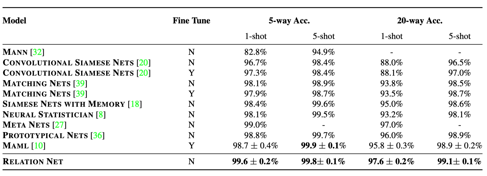

原文地址：https://arxiv.org/abs/1711.06025
摘要
本文提出了一个针对小样本学习（ Learning），在概念上简单、灵活且通用的框架，该分类器只需要提供少量的样本，即可实现对一个新类的识别。 我们的方法称为关系网络（Relation Network — RN ），实现了从头开始的端到端训练。 在元学习（Meta-learning）期间，模型在训练过程中通过比较少量图像，从中得到一个深度距离度量，这些设计方法均是为了模拟小样本学习的环境。一旦经过训练，关系网络就能够通过计算支撑图像与每个新类的少数示例之间的关系得分来对新类别的图像进行分类，而无需进一步更新网络。 除了实现改进小样本学习性能外，我们的框架还可以轻松扩展到零次学习（Zero-shot learning）。对五个基准测试的实验表明，本文的简单模型为这两个任务提供了一种统一而有效的方法。
介绍
深度学习模型已经在视觉识别任务中取得了巨大成功 [22,15,35]。然而，这些监督学习模型需要大量标记数据和多次训练迭代来训练其大量的参数。由于标记样本的成本存在，这严重限制了它们对新类别的可扩展性，但更根本地限制了它们对新出现的（例如，新的消费者设备）或稀有（例如，稀有动物）类别的适用性，因为其可能根本不存在大量的标记好的样本。相比之下，人类非常擅长在很少的样本、或者根本没有样本的情况下也能识别事物，即小样本学习 [23,9] 或零次学习 [24]。例如，孩子们可以很轻松地通过书中的单张图片，或者它看起来很像一头有条纹的马这样的描述，概括、识别出“斑马”的概念。由于传统深度学习的方法在小样本学习和零次学习中表现较差，并且受到人类针对这两种情况的较强能力的启发，在机器学习领域最近激起了关于小样本学习 [8, 39, 32, 18, 20, 10, 27, 36, 29] 和零次学习 [11, 3, 24, 45, 25, 31] 的研究兴趣。
小样本学习旨在仅通过少量的带标记样本即可实现识别新的视觉类别。其只需一个或几个样本即可得到较好的结果，挑战了深度学习中中的标准“微调”实践 [10]。数据增强和正则化技术可以减轻在有限数据体系下的过拟合情况，但它们无法解决这一问题。因此，针对小样本学习的现代方法通常将训练分解为一个辅助的元学习过程，其中迁移学习的知识以良好的初始条件 [10]，嵌入 [36, 39] 或优化策略 [29] 的形式学习，这样小样本学习的问题可通过微调 [10] 学习到的优化策略或者计算前馈传递 [36, 39, 4, 32] 来解决，而不需要更新网络权重。零次学习也受到相关难题的影响。识别器通过一个描述了其类别的例子进行训练（例如，一次的单一样本图像），使基于梯度学习情况下的数据不足成为一项挑战。
虽然研究前途很大，但大多数现有的小样本学习方法要么需要复杂的推理机制 [23, 9]，复杂的递归神经网络（RNN）架构 [39,32]，要么通过微调目标问题 [10, 29] 来解决。我们的方法与其他旨在针对一次学习（One-shot Learning）培养一个有效指标的方法最为相似 [39, 36, 20]。不过他们的研究方向专注于可迁移的嵌入式学习和预定义固定度量方法（如，欧式距离 [36]），我们则更进一步地通过学习一个可迁移的深度度量方式，用于比较图像之间的关系（小样本学习），或者图像和类描述之间的关系（零次学习）。 通过表达更深层解决方案的归纳偏置（嵌入和关系模块中的多个非线性学习阶段），我们可以更轻松地得到问题的一般解决方案。
具体而言，我们提出了一种双分支关系网络（RN），它通过学习将待分类图像与少数标记的样本图像进行比较来实现小样本问题的识别。首先，嵌入模块会生成待分类和训练图像的表示。然后通过关系模块比较这些嵌入后的表示，从而确定它们是否来自相同的类别。受到 [39, 36] 中基于训练过程的策略的启发，嵌入和关系模块是端到端的元学习，以支持小样本学习。这可以被视为对于 [39, 36] 策略的扩展，即使用可学习的非线性比较器，而不是固定的线性比较器。我们的方法优于先前的方法，同时更简单（没有RNN [39, 32, 29]）和更快（不需要微调 [29,10]）。我们提出的策略也直接推广到零次学习。在这种情况下，样本分支嵌入的是单张图片的类别描述而不是单个样本训练图像本身，并且关系模块学习比较的是待分类图像和类别描述。
总的来说，本文贡献的是提供一个简洁流畅的框架，高效简单地同时囊括了小样本学习和零次学习问题。我们对四个基准测试的评估表明，它提供了全面的引人注目的性能，同时比替代方案更简单，更快速。
相关研究
对一次样本或小样本的物体识别的研究已经有一段时间了 [9]。早期关于小样本学习的研究往往涉及具有复杂迭代推理策略的生成模型 [9, 23]。随着在数据丰富的场景下基于深度学习的识别模型的成功 [22, 15, 35]，人们对将这种深度学习方法推广到小样本学习情况的兴趣激增。其中许多方法使用元学习或学会学习（Learning-to-learn）策略，因为这些模型从一组辅助任务（元学习）中提取一些可迁移的信息，从而帮助它们很好地解决在将深度模型应用于稀疏数据问题时，可能出现的过拟合问题。
学会微调 成功的MAML（Model-Agnostic Meta-Learning，模型无关元学习）方法 [10] 旨在对初始化条件（神经网络权重集）进行元学习，这有利于对小样本问题进行微调。这里的策略是搜索给定神经网络的权重配置，使得它可以在较少的梯度下降更新步骤中有效地通过微调来解决稀疏数据问题。从多任务训练集中抽取许多不同的目标问题；然后对基本神经网络模型进行微调以解决它们中的每一个，这样每个目标问题的成功能够驱动基本模型的更新 — 进一步推动生成易于微调的初始化条件。小样本学习的优化方法 [29] 在元学习的框架下进一步发展，不仅考虑到一个良好的初始化条件，还可以是一个基于 LSTM（Long Short-Term Memory，长短期记忆）的优化器，其在微调过程中表现出色。然而，这两种方法都需要对目标问题进行微调。相比之下，我们的方法完全以前馈传递的方式解决目标问题，无需更新模型，使其对于时间、内存缺乏的应用更加方便。
基于 RNN 记忆模型（ Recurrent Neural Networks，循环神经网络）另一类方法利用具有记忆的递归神经网络 [27, 32]。这类解决方法的想法通常是利用一个 RNN 在给定问题的数据集上进行迭代，通过在隐藏激励层或外部存储器中积累解决问题所需的知识。 因此，“学习”单个目标问题可以在展开 RNN 时发生，而元学习意味着通过学习许多不同的问题来训练 RNN 的权重。虽然这种方法具有吸引力，但这些架构面临着必须可靠地存储潜在长期记忆、相关历史信息而不被遗忘的问题。在本文的方法中，我们避免了使用循环网络的复杂性和确保其记忆充分性所涉及的问题。 相反，我们的元学习方法完全由简单快速的前馈 CNN 来定义。
嵌入和度量学习方法 在解决小样本问题时，先前的方法需要一些复杂性。另一类方法旨在学习一组投影函数，这些投影函数从目标问题中获取待分类图像和样本图像，并以前馈方式对其进行分类 [39, 36, 4]。一种方法是根据样本集 [4] 参数化前馈分类器的权重。这里的元学习是训练辅助参数化网络，该网络学习如何根据几个样本集来对给定的前馈分类问题进行参数化。 基于度量学习的方法旨在学习一组投影函数，使得当图像在该嵌入空间中表示时，使用简单的最邻近或线性分类器即可容易地识别图像 [39,36,20]。在这种情况下，元学习的可迁移知识是投影函数，目标问题是简单的前馈计算。
与我们最相关的方法是 [36] 的原型网络（prototypical networks）和 [20] 的孪生网络（siamese networks）。 这些方法专注于学习一个嵌入空间，这些嵌入空间转换原始数据，使得它可以用固定的最邻近 [36] 或线性 [20,36]分类器识别。相比之下，我们的框架进一步定义了一种关系型 CNN 分类器，其类似于 [33, 44, 14]（其中 [33] 侧重于推理同一图像中两个对象之间的关系，这属于另一类问题）。与 [20, 36] 相比，这可以被视为提供可学习而非固定的度量，或者说非线性而不是线性分类。 与 [20] 相比，我们具有端到端的方式从头开始训练这样的好处，而与 [32] 相比，我们避免了样本集对于 RNN 嵌入的复杂性，并且仅仅依赖于池化 [33]。
零次学习 我们的方法专为小样本学习而设计，但通过修改样本分支以输入单个图像类别描述而不是单个训练图像本身，即可优雅地将研究领域扩展到零次学习（ZSL）。 当应用于 ZSL 时，我们的框架与对齐图像和类别到嵌入空间，并通过预测图像和类别在嵌入空间上每一对是否匹配 [11, 3, 43, 46] 来实现识别的方法是相似的。与先前基于度量的解决小样本问题的尝试类似，其中大多数在完成将图像和类别嵌入到新的空间上后，应用固定的手动定义的相似性度量器或线性分类器。相比之下，我们再次从更深入的端到端架构中获益，包括以我们非线性度量器通过卷积关系网络形式学习；以及基于训练过程的培训策略。
方法介绍
问题定义
我们考虑了小样本分类学习的任务。在形式上，我们有三个数据集：训练集，支持集和测试集。 支持集和测试集共享相同的标签空间，但是训练集有自己的标签空间，与支持 / 测试集不相交。如果支持集中包含 $C$ 个不相交的类，每类包含了 $K$ 个样本，则该小样本问题称为 $C-way$ $K-shot$ 问题。
仅使用支持集，我们原则上可以训练分类器为测试集中的每个样本 $x$ 分配类标签 $y$。 然而，由于支持集中缺少已标记样本，这种分类器的性能通常不令人满意。 因此，我们的目标是在训练集上进行元学习，以便提取可迁移知识，这将使我们的小样本学习方法能够在支持集上表现更好，从而更成功地对测试集进行分类。
有效利用训练集的方法是通过基于过程的训练模仿小样本学习的情况。如 [39] 中所提出的。在每次训练迭代中，通过从训练集中随机选择 $C$ 类来形成一集，其中来自这 $C$ 类的 $K$ 个标记样本构成了样本集 $S$ ，以及那些 $C$ 类样本的其余部分的被用作查询集 $ Q $。此样本 / 查询集拆分旨在模拟将在测试时遇到的支持 / 测试集。如果需要，可以使用支持集进一步调整从样本 / 查询集训练的模型。在这项任务中，我们采用了这种基于集的培训策略。 在我们的几次实验中（见4.1节），我们考虑一次学习（$K = 1$，图 1）和五次学习（$K = 5$）情况。 我们还解决了$K = 0$ 零镜头学习问题，如第3.3节所述。
模型
一次学习 我们的关系网络（RN）由两个模块组成：嵌入模块 $f_{φ}$ 和关系模块 $g_{φ}$，如图 1 所示。查询集 $Q$ 中的样本 $x_{j}$ 和样本集 $S$ 中的样本 $x_{i}$ 被送入嵌入模块 $f_{φ}$ ，其产生特征映射 $f_{φ}(x_{i})$ 和 $f_{φ}(x_{j})$ 。特征映射 $f_{φ}(x_{i})$ 和 $f_{φ}(x_{j})$ 通过运算器 $C(f_{φ}(x_{i}), f_{φ}(x_{j}))$ 结合。 在这项工作中，我们假设 $C(·，·)$是深度特征图的串联（concatenation），尽管其他选择也是可能的。
将样本和查询的组合特征映射馈送到关系模块 $g_{φ}$，其最终产生 0 到 1 范围内的标量，表示 $x_{i}$ 和 $x_{j}$ 之间的相似性，其被称为关系分数。因此，在 $C$ 类单次问题情况中，我们为一个待查询输入 $x_{j}$ 和训练样本集 $x_{i}$ 之间的关系生成 $C$ 个关系得分 $r_{i,j}$。
$$
r_{i,j} = g_{φ}(C(f_{φ}(x_{i}), f_{φ}(x_{j}))), \quad\quad i=,1,2,…,C \tag{1}
$$
$K$ 次学习 对于$K$ 次学习，其中 $K> 1$，我们对来自每个训练类的所有样本的嵌入模块输出进行逐元素求和，以形成该类的特征映射。该池化的类级特征映射与上面的查询图像特征映射组合。 因此，在一次学习或几次学习情况中，一个查询的关系分数个数总是$C$。
目标函数 本文使用均方误差（mean square error，MSE）损失（方程2）来训练我们的模型，将关系得分 $r_{i,j}$ 回归到真实值：匹配的对具有相似性 1 ，而不匹配对具有相似性 0。
$$
ϕ, φ \leftarrow \mathop{\arg\min}\limits_{ϕ, φ} \sum_{i=1}^{m}\sum_{j=1}^{n}(r_{i,j}-1(y_{i} == y_{j}))^2 \tag{2}
$$
MSE 并不是唯一标准的选择。我们的问题似乎是标签空间为 {0, 1} 的分类问题。然而，从概念上讲，我们正在预测关系分数，这可以被认为是一个回归问题，尽管对于真实值来说，我们只能生成 {0, 1} 的结果。
零次学习
零次学习类似于一次学习，如果将每个类赋予一个信息用以识别。然而，对于每个 $C$ 训练类而言，它给予网络的不是一张图像，而是一个语义类的嵌入向量 $v_{c}$。 修改我们的框架来处理零次问题很简单：由于用在支持集中的语义向量是不同的（例如，是属性向量而不是图像），我们使用除嵌入模块 $f_{φ1}$ 之外的第二个异构嵌入模块 $f_{φ2}$ 用于图像待查询集。然后如前一样应用关系网络 $g_{φ}$。因此，每个待查询输入的 $x_{j}$ 的关系分数为：
$$
r_{i,j} = g_{φ}(C(f_{φ1}(v_{c}), f_{φ2}(x_{j}))), \quad\quad i=,1,2,…,C \tag{3}
$$
针对零次学习的目标函数与小样本学习的一致。
网络结构
由于大多数小样本学习模型使用四个卷积块来作为嵌入模块 [39, 36]，我们遵循相同的架构设置进行公平比较，参见图 2。更具体地说，每个卷积块分别包含 64 个 3×3 滤波器进行卷积，一个归一化层，和 ReLU 非线性层。前两个块也包含 2×2 最大池化层，而后两个块不包含。我们这样做的目的是我们需要输出特征图以用于关系模块中的更多的卷积层。关系模块由两个卷积块和两个全连接层组成。每个卷积块是一个 3×3 卷积，带有 64 个滤波器，然后是归一化层，ReLU 非线性层和 2×2 最大池化层。对于 Omniglot 和 miniImageNet ，最后一个最大池化层的输出大小分别为 $H = 64$ 和 $H = 64 * 3 * 3 = 576$。两个全连接层分别是 8 维和 1 维。除了输出层是 Sigmoid 之外，所有全连接层都使用 ReLU 函数，以便为我们网络架构的所有版本均能生成合理范围内的关系分数。
零次学习架构如图 3 所示。在该架构中，DNN 的子网络是在 ImageNet 上预训练的现有网络（例如，Inception或 ResNet）。
实验
本文评估了提出的网络在两类问题上的效果：针对小样本学习问题的数据集是 Omniglot 和 miniImagenet，针对零次学习的数据集是 Animals with Attributes (AwA) 和 Caltech-UCSD Birds-200-2011 (CUB)。所有实验都是基于 PyTorch [1] 实现的。
小样本识别
设置 在小样本学习的所有实验中，均使用 Adam [19]，初始学习率为 $10^{-3}$，每 100,000 次退化一半。 我们所有的模型都是从头开始进行端到端训练，没有额外的数据集。
比较基准 我们比较了几种针对小样本识别较为领先的模型，包括 neural statistician 模型 [8]，包括或不包括微调的 Matching Nets [39]，MANN [32]，带记忆的 Siamese Nets [18]，Convolutional Siamese Nets [20]，MAML [10]，Meta Nets [27]，Prototypical Nets [36] 和 Meta-Learner LSTM [29]。
Omniglot
数据集 Omniglot [23] 包含来自 50 种不同字母的 1623 个字符（类）。 每个类包含 20 个不同人所写的样本。 参照 [32, 39, 36]，我们通过现有将数据旋转 90°，180° 和 270° 来增加新类。并使用 1200 个原始类加上旋转后的新类用于训练，剩余的 423 个类加上旋转后的新类用于测试。 所有输入图像的大小调整为 28×28。
训练 除了包括 $K$ 张样本图像，针对每轮包含 $C$ 个类的训练中， $5-way$ $1-shot$ 包含 19 个待查询图像，$5-way$ $5-shot$ 有 15 个待查询图像，$20-way$ $1-shot$ 有 10 个待查询图像，$20-way$ $5-shot$ 有 5 个待查询图像。这意味着例如在用于 $5-way$ $1-shot$ 射击实验的一个训练集 / 小批量（mini-batch）中存在 $19×5 + 1×5 = 100$ 个图像。
结果 参考 [36]，我们通过将来自测试集的 1000 多个随机生成的测试轮结果求平均来计算 Omniglot 上的小样本分类准确度。对于 1 次和 5 次的实验，我们分别对每个类取出一张和五张待查询图像，以便在测试期间进行评估。结果显示在表 1 中。我们在所有实验设置中获得了最好的结果，具有更高的平均精度和更低的标准偏差，除了 $5-way$ $5-shot$ 问题中我们的模型精度比 [10] 低 $0.1％$。并且许多其他方案具有显着更复杂的模型 [27, 8]，或者对目标问题进行微调 [10, 39]，但我们却没有。

miniImageNet
数据集 miniImagenet 数据集最初由 [39] 提出，由 60,000 个彩色图像和 100 个类组成，每个类有 600 个样本。 我们按照 [29] 的分组，分别用 64，16 和 20 个类进行训练，验证和测试。 16 个验证类仅用于监视泛化性能。
训练 参考大部分现有的小样本学习中存在的标准设置，我们设计了 $5-way$ $ 5-shot$ 和 $1-shot$ 问题。针对每轮包含 $C$ 个类的训练中， $5-way$ $1-shot$ 包含 15 个待查询图像，$5-way$ $5-shot$ 有 10 个待查询图像。这意味着例如在用于 $5-way$ $1-shot$ 射击实验的一个训练集 / 小批量（mini-batch）中存在 $15×5 + 1×5 = 80$ 个图像。所有输入图像的大小调整为 84×84。 我们的模型都是从头开始进行端到端训练，没有额外的训练集。
结果 参考 [36]，我们在 $5-shot$ 和 $1-shot$ 场景中的每一轮每一个批次中均放入 15 个待查询图像进行测试，并且通过对来自测试集的 600 个随机生成的集合进行平均来计算小样本分类的准确度。
从表 2 中我们可以看出，我们的模型在$5-way$ $ 5-shot$ 情况和$5-way$ $ 1-shot$ 的结果上达到了最好的结果。并且，prototypical networks [36] 需要在每轮针对 $1-shot$ 的训练中训练 $30-way$ 15 次查询，$5-shot$ 的训练中训练 $20-way$ 15 次查询。 当每次训练时以 $ 5-way$ 15查询训练时，[36] $1-shot$ 仅得到 $46.14±0.77％$ 的结果，是明显弱于我们的。相比之下，我们所有的模型都是 $ 5-way$ 1 次训练，针对 $ 1-shot $ 问题，5次查询，针对 $ 5-shot$ 问题，训练次数少于 [36]。
零次识别
数据集和设置 我们遵循两个 ZSL 设置：传统的设置和 [42] 提供的用于训练 / 测试分割的新 GBU 设置。在 [42] 之前大多数现有 ZSL 工作采用的旧设置下，一些测试类也出现在 ImageNet 1K 类中，这些类已用于预先跟踪图像嵌入网络，因此违反了零次学习的假设。与之相反的是，新的 GBU 设置可确保数据集的所有测试类都不会出现在 ImageNet 1K 类中。 在这两种设置下，测试集只能包含看不见的类样本（常规测试集设置）或者看到和看不见的类样本的混合。 后者称为广义零次学习（generalised zero-shot learning，GZSL），在实践中更为现实。
在传统方案中，选择的是两个广泛使用的 ZSL 基准，AwA（Animals with Attributes）[24]，由 50 种动物的30,745 个图像组成。它有一个固定的用于测试的拆分方法，为 40 个训练集和 10 个测试集。CUB（Caltech-UCSD Birds-200-2011）[40] 包含11,788 张 200 种鸟类的图像，其中有 150 种可见类和 50 种不相似的不可见类。GBU 的设置选择了三个数据集 [42]：AwA1，AwA2 和 CUB。 新发布的 AwA2 [42]由 37,322 个 50 类的图像组成，这是 AwA 的扩展，而 AwA1 与 AwA 相同。
语义表达 对于 AwA，我们使用来自 [24] 的连续的 85 维类级属性向量，它已被所有最近的项目中所使用。对于 CUB，使用连续的 312 维类级属性向量。
实现细节 两个不同的嵌入模块用于零次学习中的两种输入模态。 除非另有说明，否则本文使用InceptionV2 [38, 17] 作为传统设置中作为查询图像的嵌入 DNN 网络，ResNet101 [16] 作为 GBU 部分的网络，将顶层的池化层作为嵌入的图像，维度分别为 D = 1024 和 2048。该 DNN 在 ILSVRC 2012 1K 数据集上进行了预训练，没有进行微调，就像最近的深度 ZSL 工作一样 [25, 30, 45]。一个 MLP 网络用于嵌入语义属性向量。对于 AwA 和 CUB，隐藏层FC1（图 3）的大小分别设置为 1024 和 1200，并且输出层 FC2 设置为与两个数据集的图像嵌入相同的维度。对于关系模块，图像和语义嵌入信息首先融合（concatenate）之后再被送到具有针对 AwA 和 CUB 的隐藏层 FC3，其大小分别为 400 和 1200。
我们在 FC1 & 2 中增加了权重衰减（L2 正则化），因为在ZSL的跨模态映射中存在一个投影域偏移问题（hubness problem）[45]，这可以通过将语义特征向量映射到具有正则化的视觉特征空间来较好地解决。之后，FC3 ＆4（关系模块）用于计算语义表示（在视觉特征空间中）与视觉表示之间的关系。 由于在该步骤中不存在投影域偏移问题，因此不需要 L2 正则化 / 权重衰减。 所有 ZSL 模型都在嵌入网络中通过权重衰减 $10^{-5}$ 进行训练。 使用 Adam [19] 将学习率初始化为 $10^{-5}$ ，然后每 200,000 次迭代减小一半。
旧设置下的结果 对大多数先前工作的 ZSL 的传统评估方法是假设测试数据都来自看不见的类。我们首先评估该情况。我们比较了表 3 中的 15 种其他方法。仅使用属性向量作为样本类的嵌入， 我们的模型在更具挑战性的 CUB 数据集上实现了 AwA 的最好的结果，优于最相关的 prototypical networks [36]，且有大幅度地提升。 最近的一些方法 [48, 12, 13] 是有争议的，因为他们一次性使用所有测试数据进行模型训练，这给他们带来了很大的优势，代价是在实际应用中可能无法满足的这种强大的假设情况，所以本文不在这里与他们比较。
GBU 设置下的结果 我们遵循了 [42] 的评估设置。 我们将模型与表 4 中的 11 个其他 ZSL 模型进行比较。10 个浅模型结果来自 [42]，最先进的方法 DEM [45] 的结果来自作者的 GitHub 第 1 页。我们可以看到，在 AwA2 和 CUB 上，我们的模型在使用调和平均（H）度量测量，以及更真实的 GZSL 设置下效果很好。在 AwA1 上，我们的方法仅输给了 DEM [45]。
为什么使用关系网络？
已有模型之间的关系
之前的相关小样本学习方法使用预先固定的距离度量方式，例如欧几里德或余弦距离来执行分类 [39, 36]。这些研究可以被视为距离度量学习，但是所有学习都发生在特征嵌入中，并且在给定学习嵌入的情况下使用固定度量。 另外还有传统的度量学习方法 [26, 7]，它们专注于学习固定特征表示的浅（线性）马哈拉诺比斯度量（Mahalanobis metric）。与先前工作的固定度量或固定特征和浅层学习度量相比，关系网络可以被视为学习深度嵌入和深度非线性度量（相似度函数）。它们在小样本学习中，端到端的结构下互相调整，以达到互相支持。
为什么这会特别有用？ 通过使用灵活函数逼近器来学习相似度，我们可以用数据驱动的方式学习一个好的度量，而不必手动选择正确的度量（欧式距离，余弦距离，马哈拉诺比斯度量）。 像 [39, 36] 这样的固定指标假定特征仅在元素方面进行比较，而与我们最相关的 [36] 假设嵌入后能够线性可分。因此，这些方法的关键取决于所学习的嵌入网络的效率，并受到嵌入网络可能产生不充分的判别表示的程度的限制。相反，通过与嵌入空间一起学习非线性相似性度量，关系网络可以更好地识别匹配 / 不匹配对。
可视化
为了说明关于前一点中提到的学习输入嵌入的充分意义，我们展示了一个合成示例，其中现有的其他方法失败，然而由于使用深度关系模块，我们的关系网络可以成功地完成任务。假设 2D 查询和样本输入嵌入到关系模块，图 4（a）显示了固定 2D 查询输入的 2D 样本输入的空间。每个样本输入（像素）根据它是否与固定查询匹配而着色。这表示嵌入模块的输出对于查询和样本集之间的较小的（如欧式距离）比较并不足够分辨出两者。在图 4（c）中，我们尝试通过 Mahalanobis 度量来实现关系模块中的匹配，可以看到效果并不好。在图 4（d）中，我们使用了另外的 2 层隐藏层 MLP 嵌入查询和样本输入以及随后的 Mahalanobis 度量，这也是不够的。只有通过学习完全深度关系模块的相似性才能解决图 4（b）中的这个问题。
在一个真正的问题中，比较嵌入数据的困难性可能不会这么极端，但它仍然具有挑战性。我们可以定性地说明匹配两个示例 Omniglot 查询图像（嵌入数据投影到2D，图5（左）） 的挑战，即通过显示匹配（青色）或不匹配（品红色）到两个待查询（黄色）的实际样本图像的相似度图表。在标准假设 [39, 36, 26, 7] 下，青色匹配样本根据一些度量（欧式距离，余弦距离，马哈拉诺比斯）计算，应该与黄色待查询图像最为邻近。但是我们可以看到匹配关系比这更复杂。 在图 5（右）中，我们根据每个查询 样本对的2D PCA 表示绘制出相同的两个示例查询，其如关系模块的倒数第二层所表示那样。 我们可以看到关系网络已将数据映射到一个空间，其中（不）匹配的对是线性可分的。
总结
我们提出了一种称为关系网络的简单方法，用于小样本和零次学习。 关系网络学习嵌入和深度非线性距离度量，用于比较查询和样本项。 通过按轮形式的端到端地训练网络，调整嵌入和距离度量，以达到高效的小样本学习解决方案。这种方法比其他的小样本学习方法更简单，更有效，并得到了最好的结果。 它进一步证明在传统和广义的零次学习情况中都是有效的。
引用
[1] Pytorch. https://github.com/pytorch/pytorch.
[2] Z. Akata, F. Perronnin, Z. Harchaoui, and C. Schmid. Labelembedding for image classification. TPAMI, 2016.
[3] Z. Akata, S. Reed, D. Walter, H. Lee, and B. Schiele. Evaluation of output embeddings for fine-grained image classification. In CVPR, 2015.
[4] L. Bertinetto, J. F. Henriques, J. Valmadre, P. H. S. Torr, and A. Vedaldi. Learning feed-forward one-shot learners. In NIPS, 2016.
[5] M. Bucher, S. Herbin, and F. Jurie. Improving semantic embedding consistency by metric learning for zero-shot classiffication. In ECCV, 2016.
[6] S. Changpinyo, W.-L. Chao, B. Gong, and F. Sha. Synthesized classifiers for zero-shot learning. In CVPR, 2016.
[7] D. Chen, X. Cao, L. Wang, F. Wen, and J. Sun. Bayesian face revisited: A joint formulation. In ECCV. Springer Berlin Heidelberg, 2012.
[8] H. Edwards and A. Storkey. Towards a neural statistician. ICLR, 2017.
[9] L. Fei-Fei, R. Fergus, and P. Perona. One-shot learning of object categories. TPAMI, 2006.
[10] C. Finn, P. Abbeel, and S. Levine. Model-agnostic metalearning for fast adaptation of deep networks. In ICML, 2017.
[11] A. Frome, G. S. Corrado, J. Shlens, S. Bengio, J. Dean, T. Mikolov, et al. Devise: A deep visual-semantic embedding model. In NIPS, 2013.
[12] Y. Fu, T. M. Hospedales, T. Xiang, Z. Fu, and S. Gong. Transductive multi-view embedding for zero-shot recognition and annotation. In ECCV, 2014.
[13] Y. Fu and L. Sigal. Semi-supervised vocabulary-informed learning. In CVPR, 2016.
[14] X. Han, T. Leung, Y. Jia, R. Sukthankar, and A. C. Berg. Matchnet: Unifying feature and metric learning for patchbased matching. In CVPR, 2015.
[15] K. He, X. Zhang, S. Ren, and J. Sun. Deep residual learning for image recognition. In CVPR, 2016.
[16] K. He, X. Zhang, S. Ren, and J. Sun. Deep residual learning for image recognition. In CVPR, 2016.
[17] S. Ioffe and C. Szegedy. Batch normalization: Accelerating deep network training by reducing internal covariate shift. In ICML, 2015.
[18] Ł. Kaiser, O. Nachum, A. Roy, and S. Bengio. Learning to remember rare events. ICLR, 2017.
[19] D. Kingma and J. Ba. Adam: A method for stochastic optimization. In ICLR, 2015.
[20] G. Koch, R. Zemel, and R. Salakhutdinov. Siamese neural networks for one-shot image recognition. In ICML Workshop, 2015.
[21] E. Kodirov, T. Xiang, and S. Gong. Semantic autoencoder for zero-shot learning. In CVPR, 2017.
[22] A. Krizhevsky, I. Sutskever, and G. E. Hinton. Imagenet classification with deep convolutional neural networks. In NIPS, 2012.
[23] B. Lake, R. Salakhutdinov, J. Gross, and J. Tenenbaum. One shot learning of simple visual concepts. In CogSci, 2011.
[24] C. H. Lampert, H. Nickisch, and S. Harmeling. Attributebased classification for zero-shot visual object categorization. PAMI, 2014.
[25] J. Lei Ba, K. Swersky, S. Fidler, and R. Salakhutdinov. Predicting deep zero-shot convolutional neural networks using textual descriptions. In ICCV, 2015.
[26] T. Mensink, J. Verbeek, F. Perronnin, and G. Csurka. Metric learning for large scale image classification: Generalizing to new classes at near-zero cost. In ECCV, 2012.
[27] T. Munkhdalai and H. Yu. Meta networks. In ICML, 2017.
[28] M. Norouzi, T. Mikolov, S. Bengio, Y. Singer, J. Shlens, A. Frome, G. S. Corrado, and J. Dean. Zero-shot learning by convex combination of semantic embeddings. In ICLR, 2014.
[29] S. Ravi and H. Larochelle. Optimization as a model for fewshot learning. In ICLR, 2017.
[30] S. Reed, Z. Akata, B. Schiele, and H. Lee. Learning deep representations of fine-grained visual descriptions. In CVPR, 2016. 6, 7
[31] B. Romera-Paredes and P. Torr. An embarrassingly simple approach to zero-shot learning. In ICML, 2015.
[32] A. Santoro, S. Bartunov, M. Botvinick, D. Wierstra, and T. Lillicrap. Meta-learning with memory-augmented neural networks. In ICML, 2016.
[33] A. Santoro, D. Raposo, D. G. Barrett, M. Malinowski, R. Pascanu, P. Battaglia, and T. Lillicrap. A simple neural network module for relational reasoning. In NIPS, 2017.
[34] P. Sermanet, D. Eigen, X. Zhang, M. Mathieu, R. Fergus, and Y. LeCun. Overfeat: Integrated recognition, localization and detection using convolutional networks. arXiv preprint arXiv:1312.6229, 2013.
[35] K. Simonyan and A. Zisserman. Very deep convolutional networks for large-scale image recognition. ICLR, 2015.
[36] J. Snell, K. Swersky, and R. S. Zemel. Prototypical networks for few-shot learning. In NIPS, 2017.
[37] R. Socher, M. Ganjoo, C. D. Manning, and A. Ng. Zero-shot learning through cross-modal transfer. In NIPS, 2013.
[38] C. Szegedy, W. Liu, Y. Jia, P. Sermanet, S. Reed, D. Anguelov, D. Erhan, V. Vanhoucke, and A. Rabinovich. Going deeper with convolutions. In CVPR, 2015.
[39] O. Vinyals, C. Blundell, T. Lillicrap, D. Wierstra, et al. Matching networks for one shot learning. In NIPS, 2016.
[40] C. Wah, S. Branson, P. Perona, and S. Belongie. Multiclass recognition and part localization with humans in the loop. In ICCV, 2011.
[41] Y. Xian, Z. Akata, G. Sharma, Q. Nguyen, M. Hein, and B. Schiele. Latent embeddings for zero-shot classification. In CVPR, 2016.
[42] Y. Xian, C. H. Lampert, B. Schiele, and Z. Akata. Zeroshot learning-a comprehensive evaluation of the good, the bad and the ugly. arXiv preprint arXiv:1707.00600, 2017.
[43] Y. Yang and T. M. Hospedales. A unified perspective on multi-domain and multi-task learning. In ICLR, 2015.
[44] S. Zagoruyko and N. Komodakis. Learning to compare image patches via convolutional neural networks. In CVPR, 2015.
[45] L. Zhang, T. Xiang, and S. Gong. Learning a deep embedding model for zero-shot learning. In CVPR, 2017.
[46] Z. Zhang and V. Saligrama. Zero-shot learning via semantic similarity embedding. In ICCV, 2015.
[47] Z. Zhang and V. Saligrama. Zero-shot learning via joint latent similarity embedding. In CVPR, 2016.
[48] Z. Zhang and V. Saligrama. Zero-shot recognition via structured prediction. In ECCV, 2016.